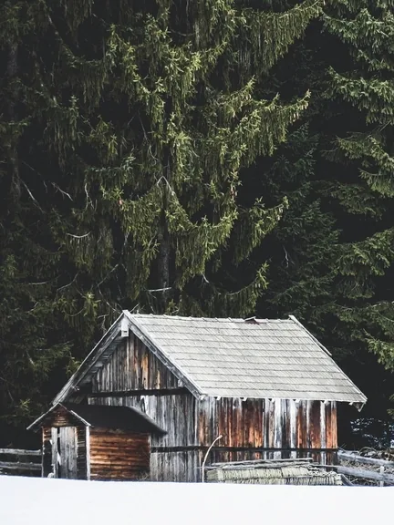
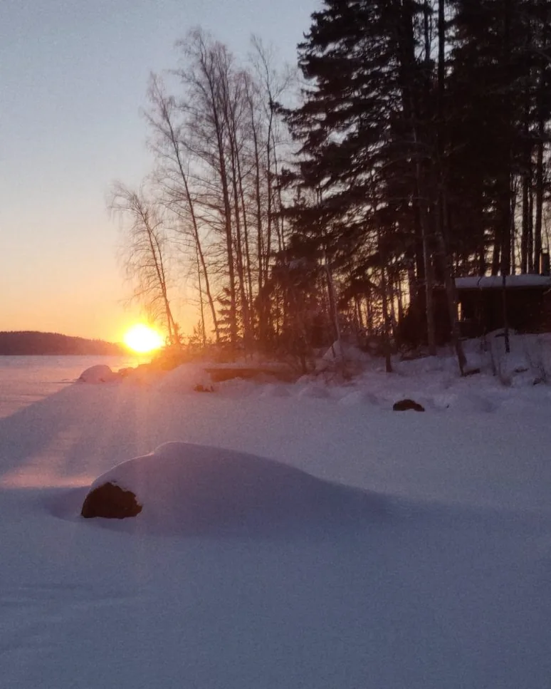
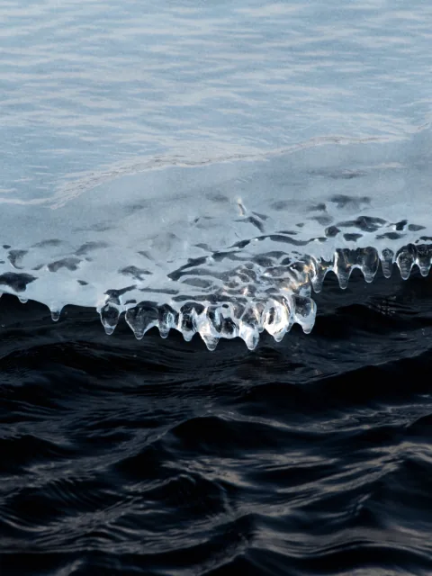
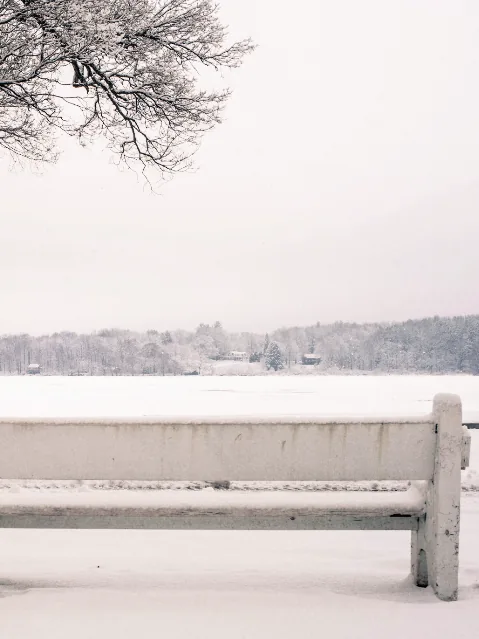
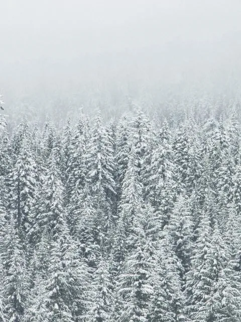
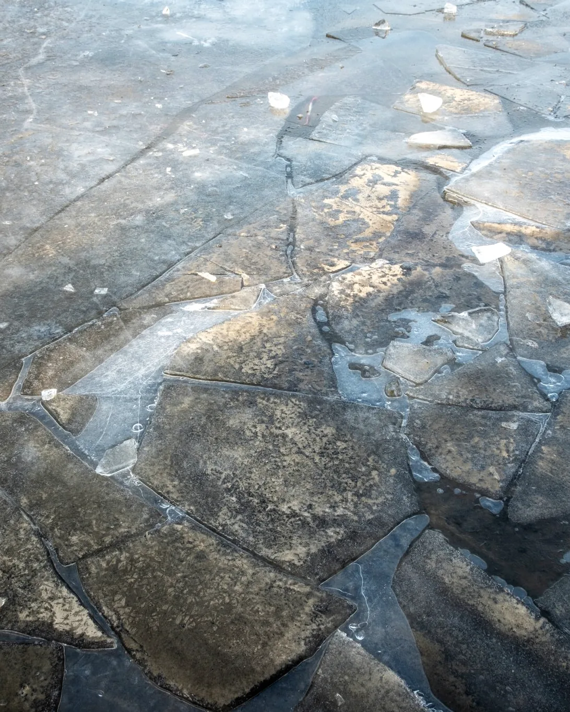
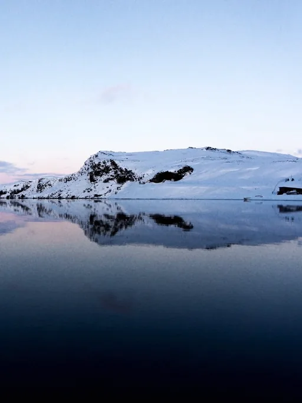
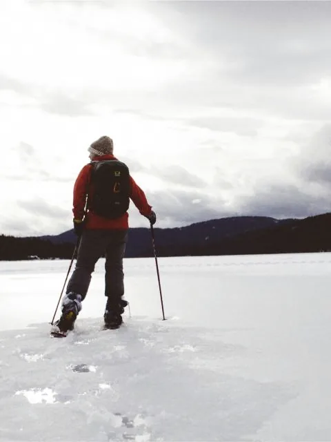

Дом в кедрах
от 32 000 ₽Две спальни, печь и веранда в лес. До 6 гостей.



Шесть домов на льду Байкала
Ольхон · февраль — март
II
Зимой Байкал замерзает так прозрачно, что сквозь лёд видно камни на дне. Мы поставили дома там, где это видно прямо с крыльца.
III

Две спальни, печь и веранда в лес. До 6 гостей.

Окно во всю стену на лёд. До 4 гостей.

Самый дальний, без соседей в поле зрения.

Парная на кедре и прорубь в десяти шагах.

На склоне, с видом поверх заснеженных крон.
IV
Прозрачный лёд держится с середины февраля до конца марта: коньки, пешие прогулки к гротам, звёзды без засветки. Эти даты разбирают к ноябрю.

Ледоход: в апреле закрываемся на три недели, в мае — первые цветы на склонах и пустые тропы.
Белые ночи, вода до 14°, лодка до мыса и ужин на берегу. Самое тёплое и самое людное время острова.

Золотые склоны в сентябре, штормы в октябре, первый снег в ноябре. Тихий сезон для тех, кто приезжает писать и молчать.
V

VI
Ответим в течение часа и пришлём ссылку на предоплату 30%. Трансфер из Иркутска организуем сами.